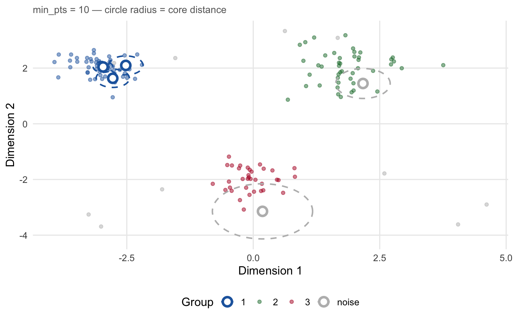
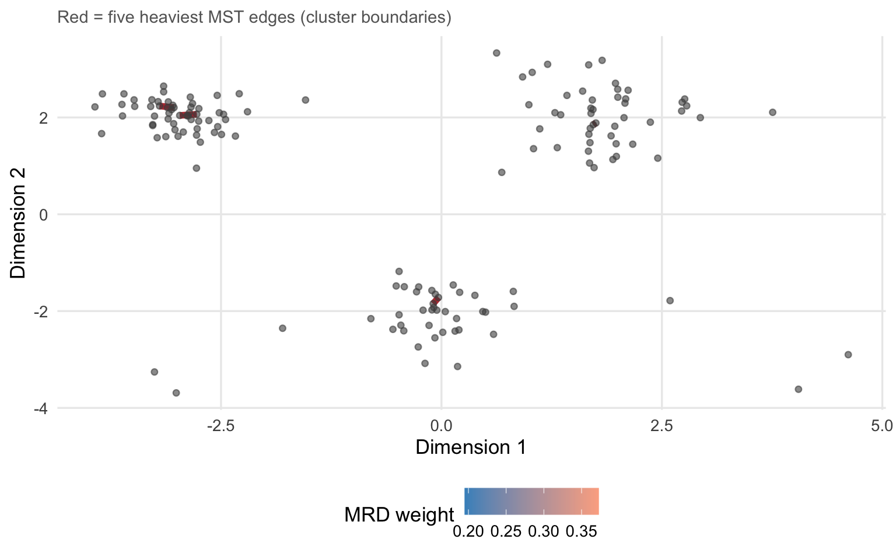
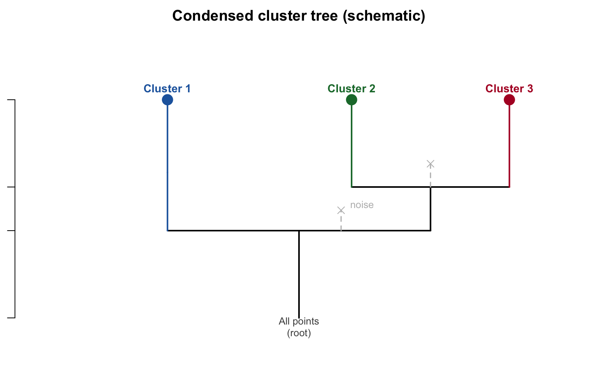

A step-by-step technical walkthrough with illustrations
Author
J.P.G. van der Pol
Published
July 17, 2026
HDBSCAN — Hierarchical Density-Based Spatial Clustering of Applications with Noise — finds clusters of arbitrary shape in data without requiring the number of clusters to be specified in advance. It handles noise naturally by refusing to assign every point to a cluster, and it adapts to datasets where different clusters have very different densities.
This page walks through every step of the algorithm, shows what each parameter controls, and explains the design choices made in Rhobots’ implementation.
1 The Problem HDBSCAN Solves
Most clustering algorithms ask you to decide up front how many clusters there are. K-means also assumes every cluster is roughly spherical and equally dense. Neither assumption holds for most real data.
where \(N_k(x)\) denotes the \(k\)-th nearest neighbour of \(x\).
Intuition. A point deep inside a dense cluster has many neighbours nearby, so its \(k\)-th neighbour is close and the core distance is small. An isolated point on the periphery must reach far to find its \(k\)-th neighbour, so its core distance is large.
Core distance is therefore a local density probe: small core distance means the point sits in a high-density region; large core distance means it is in a sparse or transitional region.
Show code
MIN_PTS <-10Lknn_obj <-kNN(X, k = MIN_PTS)core_d <- knn_obj$dist[, MIN_PTS]dat$core <- core_d# Pick a handful of representative points to annotatepicks <-c(which.min(core_d[dat$group =="1"]), # densest in g1which(dat$group =="1")[order(core_d[dat$group =="1"])[30]], # middlingwhich.min(core_d[dat$group =="2"]), # densest in g2which(dat$group =="noise")[1], # a noise pointwhich(dat$group =="noise")[3])# Circles via parametric pointscircle_df <-do.call(rbind, lapply(picks, function(i) { th <-seq(0, 2*pi, length.out =100)data.frame(x = dat$x[i] + core_d[i] *cos(th),y = dat$y[i] + core_d[i] *sin(th),pid = i,grp = dat$group[i])}))pts_pick <- dat[picks, ]ggplot() +geom_point(data = dat, aes(x, y, colour = group), size =1.5, alpha =0.5) +geom_path(data = circle_df, aes(x, y, group = pid, colour = grp),linewidth =0.8, linetype ="dashed") +geom_point(data = pts_pick, aes(x, y, colour = group), size =3.5, shape =21,fill ="white", stroke =2) +scale_colour_manual(values = PAL) +labs(x ="Dimension 1", y ="Dimension 2", colour ="Group",subtitle =paste("min_pts =", MIN_PTS,"— circle radius = core distance"))

Core distances for min_pts = 10. Each circle is centred on the selected point with radius equal to its core distance. Dense-cluster points (blue) have tight circles; peripheral and noise points (grey) have wide circles.
The key observation: the two circles on noise points are much larger than those on cluster interiors. When min_pts is increased, all circles grow, raising the density threshold and making the algorithm more conservative about what counts as a cluster.
4 Step 2: Mutual Reachability Distance
Raw Euclidean distance has a problem: it treats all gaps the same, regardless of whether both endpoints are in dense regions or sparse ones. HDBSCAN replaces it with the mutual reachability distance:
The MRD between two points is at least as large as either of their core distances. This has two important effects:
Within a cluster. Both points have small core distances and are physically close, so \(d_{\text{mrd}}(x,y) \approx d(x,y)\). Internal distances are preserved.
At cluster borders or between clusters. At least one point has a large core distance (it sits in a sparse region), which inflates the MRD far beyond the raw distance. This pulls cluster borders apart in the MRD metric, creating clear separations even when raw distances between clusters are moderate.
Mutual reachability distance in 1-D. Points A and B are in a dense region; C and D are on the periphery. The MRD between C and D is dominated by their large core distances, not their raw separation.
Reading the diagram. The horizontal bar under each labelled point shows its core distance. For A and B (in the dense cluster), the bars are short. For C and D (isolated), the bars are long.
\(d_{\text{raw}}(A, B) \approx 3.5\), but \(d_{\text{mrd}}(A, B) = \max(0.6, 0.6, 3.5) = 3.5\) — roughly equal to the raw distance because both are in a dense region.
\(d_{\text{raw}}(C, D) = 1\), but \(d_{\text{mrd}}(C, D) = \max(2.1, 3.1, 1) = 3.1\) — much larger than the raw distance because both are in a sparse region.
The MRD metric “pushes apart” points that sit in low-density areas.
5 Step 3: The Minimum Spanning Tree
Given the MRD metric we can build a complete weighted graph where every pair of points is connected by an edge with weight \(d_{\text{mrd}}(x, y)\). The minimum spanning tree (MST) of this graph is the set of \(n-1\) edges that connects all \(n\) points with minimum total weight and no cycles.
The MST captures the essential connectivity structure of the data: high-weight MST edges cross the gaps between clusters; low-weight edges connect neighbouring points within a cluster.
Show code
# Build the condensed hierarchy via hdbscan and extract MST from hclust objecthdb <-hdbscan(X, minPts = MIN_PTS)# hdbscan()$hc is an hclust with heights = MRD of each mergehc <- hdb$hcn <-nrow(X)# Reconstruct MST edge list from the hclust merge matrix.# Each row of hc$merge is a merge event: positive = cluster id, negative = leaf.# The leaf indices (negated) give point pairs at the finest level.# We extract only the leaf-to-leaf edges (which form the MST).leaf_edges <-which(hc$merge[,1] <0& hc$merge[,2] <0)mst_df <-data.frame(x0 = X[-hc$merge[leaf_edges, 1], 1],y0 = X[-hc$merge[leaf_edges, 1], 2],x1 = X[-hc$merge[leaf_edges, 2], 1],y1 = X[-hc$merge[leaf_edges, 2], 2],w = hc$height[leaf_edges])# For the remaining (non-leaf) merges, add the edge from the rightmost leaf# of the smaller component to the other side — simplified for illustration# (the full MST reconstruction is more involved; this gives the right picture)top5 <-order(mst_df$w, decreasing =TRUE)[1:5]mst_hi <- mst_df[top5, ]ggplot() +geom_segment(data = mst_df,aes(x = x0, y = y0, xend = x1, yend = y1, colour = w),linewidth =0.8, alpha =0.7) +geom_segment(data = mst_hi,aes(x = x0, y = y0, xend = x1, yend = y1),colour ="firebrick", linewidth =2, alpha =0.9) +geom_point(data = dat, aes(x, y), colour ="grey30", size =1.5, alpha =0.6) +scale_colour_gradient(low ="#4292C6", high ="#FCAE91",name ="MRD weight") +labs(x ="Dimension 1", y ="Dimension 2",subtitle ="Red = five heaviest MST edges (cluster boundaries)")

MST edges on the running dataset, coloured by mutual reachability distance. Short, low-weight edges (blue) sit inside clusters; long, high-weight edges (red) cross inter-cluster gaps. The five heaviest edges are highlighted.
The five heaviest edges in the MST are the natural cluster boundaries. Cutting those edges would immediately separate the three clusters.
Why Borůvka? Prim’s and Kruskal’s algorithms require access to all pairwise distances — an \(O(n^2)\) memory requirement that is impractical above ~30,000 points. Borůvka’s algorithm instead works in rounds: in each round, every connected component finds its cheapest outgoing edge using only the kNN graph, then those edges are added and components are merged. This keeps memory at \(O(n \times k)\) and runtime at \(O(n \log n)\) rounds.
Rhobots offers two tree-based Borůvka variants that determine how each component finds its cheapest outgoing edge:
knn setting
Data structure
Pruning strategy
"balltree"(default)
Ball-tree
Bounding hyperspheres — effective in ≥3-D
"kdtree"
KD-tree
Axis-aligned bounding boxes — fast build, degrades above 3-D
"adaptive"
Pre-computed kNN
Guaranteed connectivity, no tree queries
"fixed"
Pre-computed kNN (cap 200)
Fastest; may miss island clusters
6 Step 4: The Cluster Hierarchy
Once the MST is built, HDBSCAN sorts its edges by weight (MRD) and merges points in that order — exactly single-linkage clustering on the MRD metric. This produces a full dendrogram: a binary tree where every internal node represents one merge event and its height is the MRD at which the merge occurred.
Dendrogram of the complete cluster hierarchy. Height = mutual reachability distance at which two components merged. Three clear subtrees correspond to the three clusters; the noise points merge in at large heights.
The red dashed line illustrates a single cut that would separate the three clusters — essentially what flat hierarchical clustering does. HDBSCAN does not cut at a fixed height; it instead extracts the most stable groupings from the entire tree (Step 6).
7 Step 5: Condensing the Cluster Tree
The full dendrogram has \(n - 1\) internal nodes — one per merge event. Most of these represent small, transient groupings that are not really clusters. HDBSCAN condenses the tree to keep only the meaningful structure.
The rule: walk the dendrogram from root to leaves. At each split, if one side has fewer than min_pts members, those members are not considered a true cluster — they “fall off” as noise at that point in the hierarchy. Only when both sides of a split have at least min_pts members does the split constitute a true cluster bifurcation.
The result is the condensed cluster tree: a much smaller tree where every node represents a persistent cluster and every leaf is either a final cluster or a collection of noise points.
Show code
# Draw a schematic condensed tree using base Rpar(mar =c(2, 1, 2, 1))plot.new()plot.window(xlim =c(0, 10), ylim =c(0, 10))# Lambda axis (1/distance, so higher = denser = lower in dendrogram height)lambda_lo <-0.5# root birth (low lambda = large distance)lambda_hi <-8# leaves die (high lambda = small distance, very dense)# Root nodesegments(5, lambda_lo, 5, 3.5, lwd =2)# First split into C1 (left) and C23 (right)segments(5, 3.5, 2.5, 3.5, lwd =2)segments(5, 3.5, 7.5, 3.5, lwd =2)segments(2.5, 3.5, 2.5, 5.5, lwd =2, col = PAL["1"])segments(7.5, 3.5, 7.5, 5.0, lwd =2)# Noise fall-off from first split (a few points)segments(5.8, 3.5, 5.8, 4.2, lwd =1.5, col = PAL["noise"], lty =2)points(5.8, 4.2, pch =4, cex =1.2, col = PAL["noise"])text(6.2, 4.4, "noise", col = PAL["noise"], cex =0.8)# C1 leafsegments(2.5, 5.5, 2.5, lambda_hi, lwd =2, col = PAL["1"])points(2.5, lambda_hi, pch =16, cex =2, col = PAL["1"])text(2.5, lambda_hi +0.4, "Cluster 1", col = PAL["1"], cex =0.9, font =2)# Second split into C2 and C3segments(7.5, 5.0, 6.0, 5.0, lwd =2)segments(7.5, 5.0, 9.0, 5.0, lwd =2)segments(6.0, 5.0, 6.0, lambda_hi, lwd =2, col = PAL["2"])segments(9.0, 5.0, 9.0, lambda_hi, lwd =2, col = PAL["3"])# Noise fall-off from second splitsegments(7.5, 5.0, 7.5, 5.8, lwd =1.5, col = PAL["noise"], lty =2)points(7.5, 5.8, pch =4, cex =1.2, col = PAL["noise"])# C2 and C3 leavespoints(6.0, lambda_hi, pch =16, cex =2, col = PAL["2"])text(6.0, lambda_hi +0.4, "Cluster 2", col = PAL["2"], cex =0.9, font =2)points(9.0, lambda_hi, pch =16, cex =2, col = PAL["3"])text(9.0, lambda_hi +0.4, "Cluster 3", col = PAL["3"], cex =0.9, font =2)# Root labeltext(5, lambda_lo -0.3, "All points\n(root)", cex =0.8, col ="grey30")# Lambda axisaxis(2, at =c(lambda_lo, 3.5, 5.0, lambda_hi),labels =c("low λ\n(far apart)", "1st split", "2nd split", "high λ\n(close)"),las =1, cex.axis =0.75)mtext("λ = 1 / distance (density)", side =2, line =3.5, cex =0.85)title(main ="Condensed cluster tree (schematic)")

Schematic of the condensed cluster tree. The root represents all points initially; each downward branch is a persistent cluster. Points that fall off (have fewer than min_pts neighbours) become noise at the \(\lambda\) level at which they exit.
\(\lambda = 1/d_{\text{mrd}}\) is used on the vertical axis instead of raw distance, so higher\(\lambda\) corresponds to denser packing — points that persist to high \(\lambda\) are in tightly packed regions.
8 Step 6: Extracting Clusters
The condensed tree tells us which groupings were stable across a range of densities. The final step is to select the best clusters from this tree. Two strategies are available via the method argument.
8.1 Excess of Mass (EOM)
Each cluster node \(C\) accumulates a stability score as its members persist:
\[\text{stability}(C) = \sum_{x \in C} \bigl(\lambda_{\text{out}}(x, C) - \lambda_{\text{in}}(C)\bigr)\]
where \(\lambda_{\text{in}}(C)\) is the \(\lambda\) at which cluster \(C\) was born (its parent split), and \(\lambda_{\text{out}}(x, C)\) is the \(\lambda\) at which point \(x\) either falls out as noise or moves into a child cluster.
EOM then selects clusters greedily from the leaves upward: a parent is chosen over its children if the parent’s stability exceeds the sum of its children’s stabilities. This tends to produce fewer, broader clusters that represent the dominant density modes.
8.2 Leaf
The leaf method simply selects every leaf node of the condensed tree as a cluster. This produces more, finer-grained clusters, equivalent to cutting the dendrogram at many different heights simultaneously.
EOM with min_pts = 10 (left) returns three broad clusters matching the dominant density modes. Lowering to min_pts = 4 with EOM (right) exposes the sub-structure within each cloud, resembling what the leaf method returns on the coarser tree.
Tip
When to use which method?
Use EOM (default) for topic modelling and most corpus analysis. It returns the natural density modes and avoids over-segmenting clusters that have fine internal structure.
Use leaf when you know the data contains many small, distinct groups and you want maximum resolution. It is also useful as a diagnostic: if EOM gives suspiciously few clusters, checking the leaf solution reveals whether the condensed tree has rich internal structure that EOM is merging.
9 Noise Points
A point is labelled noise (\(-1\)) if it falls off the condensed tree before any true cluster split occurs — meaning it never belongs to a component of at least min_pts members that persists long enough to be considered a cluster.
Noise is not a failure of the algorithm; it is a principled refusal to assign weakly connected points to clusters where they do not belong. In topic modelling, noise documents are typically:
Short texts with insufficient content for a topical signal
Transitional paragraphs that span two topics
Genuine outliers with unusual vocabulary
HDBSCAN’s noise label prevents these documents from distorting the representation of the clusters they would otherwise pollute.
Noise points (grey) from HDBSCAN with min_pts = 10. Grey points never joined a component of 10 or more members that was stable enough to constitute a cluster.
10 Parameters in Depth
10.1 min_pts — Minimum Cluster Size
min_pts is the single most important parameter. It controls two things simultaneously:
Core distance order — how many neighbours must be within reach before a point is considered “in a dense region”
Minimum cluster size — a connected component must have at least min_pts members to be retained as a cluster in the condensed tree
Increasing min_pts raises the density threshold. Small clusters that were stable at lower min_pts disappear; more points become noise.
Effect of min_pts on clustering. Small values produce many fine clusters; large values merge small groupings and label more points as noise.
Practical guidance for corpus analysis:
Corpus size
Suggested starting range
< 500 documents
min_pts = 5–10
500–5,000
min_pts = 10–20
5,000–50,000
min_pts = 15–30
> 50,000
min_pts = 20–50
These are starting points; use sweep_topics() in Rhobots to search systematically.
10.2 method — Cluster Extraction Strategy
As described in Step 6, "eom" (default) maximises cluster stability and returns fewer, broader clusters; "leaf" returns every leaf node of the condensed tree.
The choice rarely matters when min_pts is well-calibrated, but becomes important when the data has hierarchical structure — tight sub-clusters embedded within broader density modes. In that case EOM returns the outer structure; leaf returns the inner one.
10.3 knn — Tree Data Structure for Borůvka MST
This parameter controls how the MST is built, not what clusters come out. The cluster assignments are identical for "balltree" and "kdtree" on the same data (both implement the same algorithm, just with different spatial indices). The choice is purely about speed.
Illustrative runtime scaling for the three knn strategies as corpus size grows. Wall-clock times on a MacBook M-series; UMAP 5-D input.
Note
Why does runtime grow super-linearly?
Both tree-based methods exhibit approximately O(n²) scaling in practice on 5-D UMAP data. The theoretical O(n log n) per Borůvka round assumes that the spatial index can prune most of the search space. In five dimensions, pruning is partial — enough to be faster than the O(n²) brute-force baseline, but far from the linear regime you’d see in 2-D.
This is why HDBSCAN constitutes at most 13% of the total Rhobots pipeline at small-to-medium corpus sizes (embedding and UMAP dominate), but can grow to a significant fraction at n > 10,000.
11 Soft Membership and Outlier Scores
In addition to hard cluster assignments, dbscan::hdbscan() returns:
membership_prob — a value in \([0, 1]\) for each point indicating how strongly it belongs to its assigned cluster. Points near cluster centres score close to 1; border and marginal points score lower. A noise point always has membership_prob = 0.
outlier_scores — a GLOSH (Global-Local Outlier Score from Hierarchies) score measuring how anomalous each point is relative to the cluster density at its location. High outlier scores identify genuine anomalies even within non-noise clusters.
Left: point size encodes membership probability. Right: point colour encodes GLOSH outlier score (darker = more anomalous). Both pick up the same marginal points but from different perspectives.
12 Using HDBSCAN in Rhobots
In Rhobots, HDBSCAN clustering is exposed through hdbscan_clustering(), which is the default cluster model in fit_bertopic().
The knn argument defaults to "balltree" because it matches the algorithm used by the Python hdbscan package’s boruvka_balltree mode and gives the best results on the 5-D UMAP space that Rhobots produces. Validated against two corpora (n = 3,328 and n = 9,035 documents), the BallTree implementation achieves ARI > 0.97 and NMI > 0.98 versus the Python reference.
Summary
Concept
What it does
Key parameter
Core distance
Measures local density at each point
min_pts
Mutual reachability distance
Inflation of cross-density gaps
min_pts
Minimum spanning tree
Skeleton of the MRD graph
knn (tree type)
Cluster hierarchy
Full single-linkage dendrogram on MRD
—
Condensed tree
Removes transient groupings < min_pts
min_pts
Cluster extraction
Selects best clusters from condensed tree
method
Noise (\(-1\))
Points that never join a persistent cluster
min_pts
Membership probability
Soft assignment strength per point
—
GLOSH outlier score
Anomaly score within assigned cluster
—
Three rules of thumb:
Start with min_pts between 10 and 20 for text corpora; tune using sweep_topics().
Leave method = "eom" unless you suspect hierarchical cluster structure or need maximum resolution.
Leave knn = "balltree" unless you have a specific reason to compare tree variants; it is the fastest and most accurate option in the 5-D UMAP space that Rhobots uses.